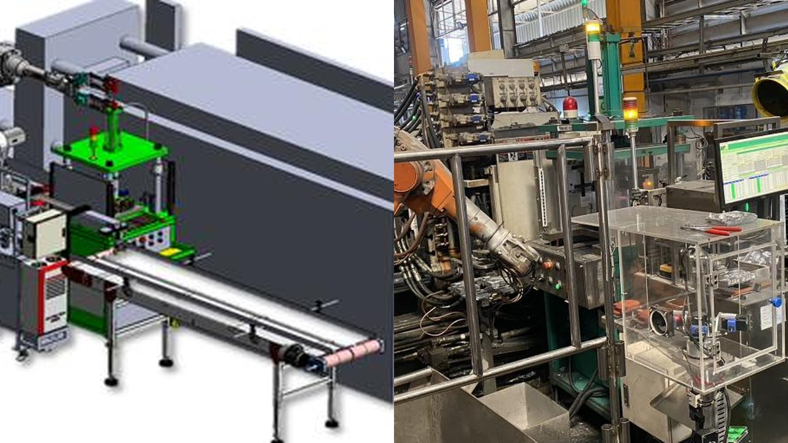
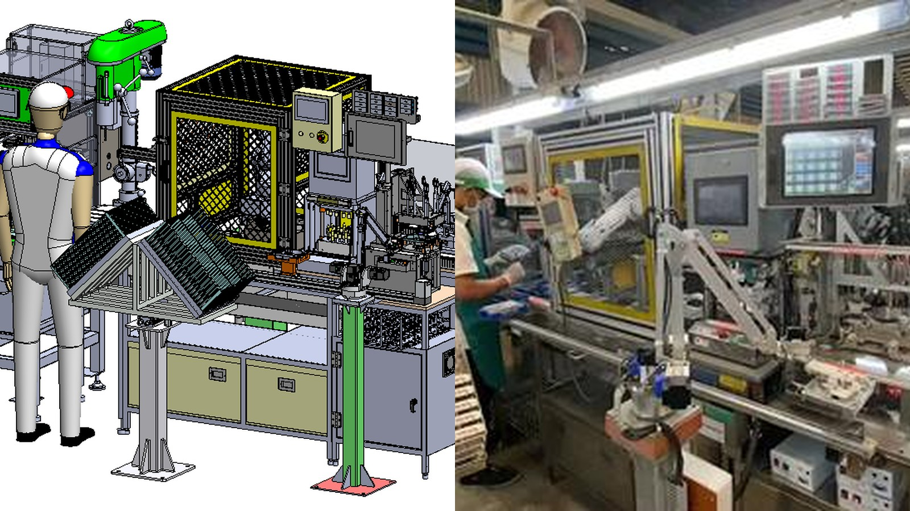
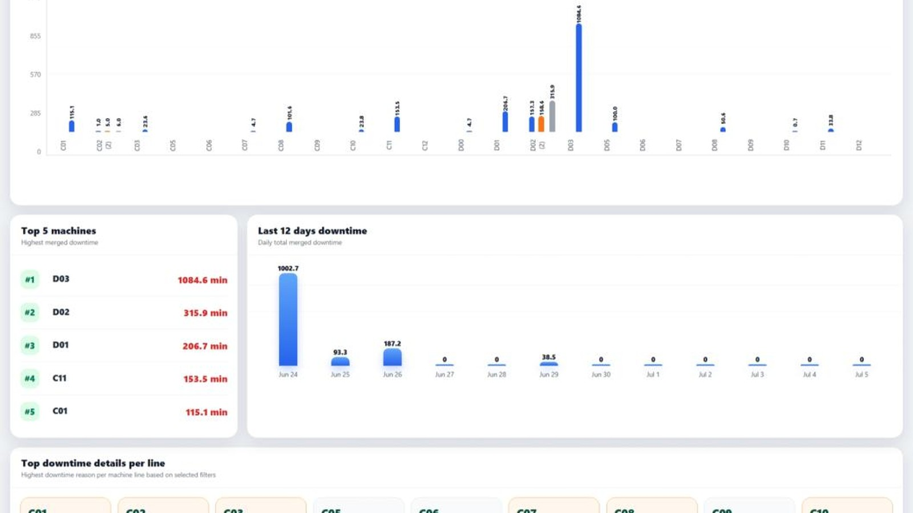
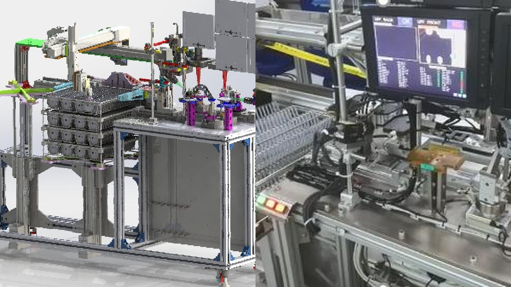
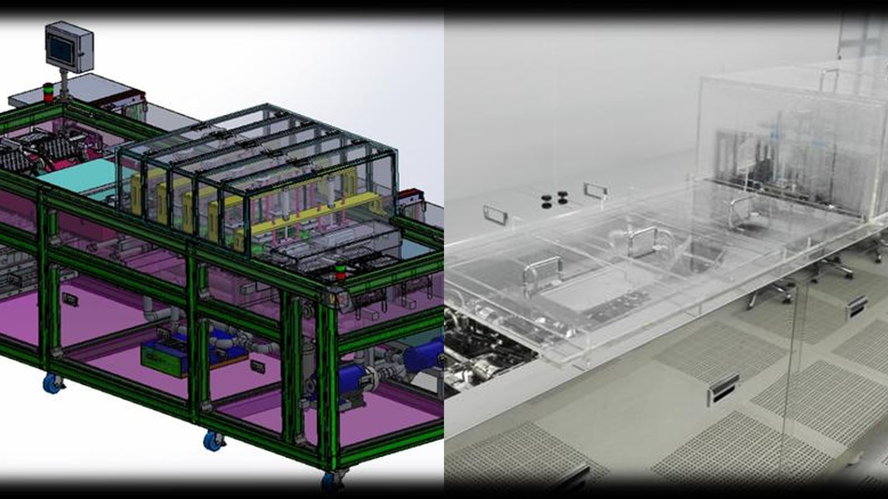
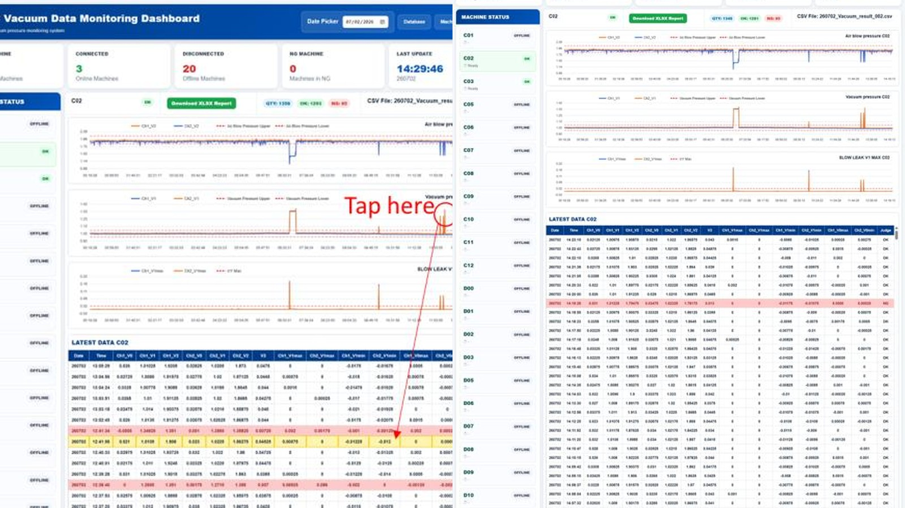

Senior Automation & Controls Engineer
From machine concept
to stable production.
I design, program, commission and improve automated manufacturing systems—combining mechanical design, controls, robotics and Smart Manufacturing.
SolidWorksPLC / HMIRoboticsServo MotionPython
About
Multidisciplinary engineering with hands-on leadership.
My work covers the full automation lifecycle: requirements, concept development, SolidWorks design, controls architecture, PLC/HMI programming, robot integration, testing, FAT/SAT and production handover.
Complete machine development
Mechanical, electrical and software integration under one engineering approach.
International project delivery
Experience across the Philippines, Thailand, Vietnam, Korea and Cambodia.
Leadership that stays technical
Management experience while remaining involved in design reviews and troubleshooting.
Employee of the Year — 2016Korean Government Patent RecognitionMechanical Engineering + Mechatronics
Selected Work
Engineering case studies
Clean project summaries with dedicated pages for the technical challenge, solution, responsibilities and impact.

Robotics • Cambodia • 2020
Fully Automated Diecasting Production Line
Integrated robots, transfer systems, trimming, deburring and production monitoring into one coordinated manufacturing line.
Open case study →
Robotics • Thailand • 2022
Robotic Deburring Automation Cell
Robot, PLC, HMI, servo motion, pneumatic clamping, safety and automated handling integrated into one cell.
Open case study →
Smart Factory • Cambodia • 2026
Smart Factory & OEE Monitoring System
Centralized machine status, downtime, OEE and production visibility through PLC integration and web dashboards.
Open case study →Additional projects

Vision • 2014
Automatic Visual Machine Inspection
Automated quality inspection replacing manual checks.
View project →
Machine Design • 2015
Auto Laser Welding System
Precision automation for high-volume production.
View project →
R&D • 2015
Automatic Spray Machine
Automation platform deployed internationally.
View project →
Smart Factory • 2025
Vacuum Monitoring System
Real-time monitoring, trends and predictive maintenance.
View project →Career
Progression through design, automation and leadership.
Assistant Manager — Automation & Maintenance
NIDEC SC WADO Cambodia
Lead automation, machine design, maintenance and Smart Factory initiatives supporting 100+ production lines and approximately 60 engineers and technicians.
Automation Engineer
Nissho Seiko Thailand
Complete machine delivery from design and controls integration through installation, qualification and production support.
Research & Development Supervisor
JIO MHW Manufacturing Corporation
Led design and programming teams and delivered projects to the Philippines, Vietnam and Korea.
Technician II — Instrumentation / Automation
NIDEC Philippines Corporation
Designed and programmed production automation, vision systems, laser welding systems and robot applications.
Application Package
Cover letter, CV and engineering portfolio
Complete 14-page package for recruiters and hiring managers.
Contact
Let’s discuss engineering opportunities.
Available for international relocation and travel.